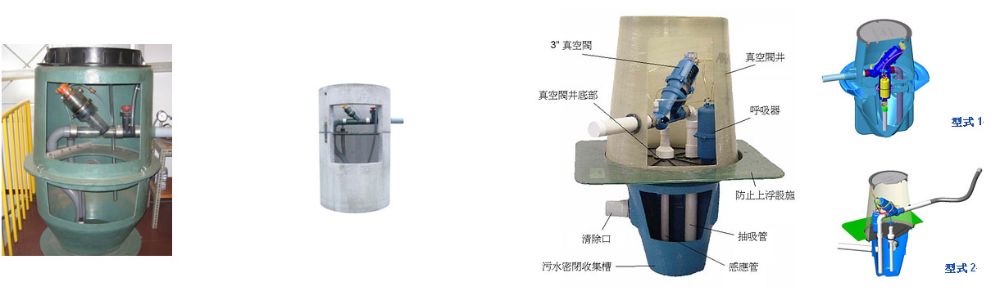

分述说明如下
1，真空阀井本体 (Valve pit package)
材质为聚乙烯(或FRP、钢筋混凝土)，包括：
(1)上部 (Upper chamber)，放置真空阀及相关连通管阀。
(2)下部（水池）(Lower chamber（Sump)，是一密闭的污水收集槽，与建筑物污水汇流管连接，液位检知器及污水吸入管均设置于其中。
(3)上下部中间是一密闭板设施。

2，真空阀 (Vacuum valve)
座落在真空阀井的上部，是一组负压气动控制的3”真空阀。本阀体为类球形关断阀，无一般类产品采用隔膜阀片容易磨损无法关断或易卡异物困扰。
3，透气设施 (Air-intake)
因某些异常原因，为避免真空阀井内产生整体负压运作，致而影响在正常操作情况下应为正压的建筑物污排水重力管线系统，因此于污水重力管在线或真空阀井上设置透气设施。
真空污水收集管线 (Vacuum lines)
真空污水收集管采用PVC 10K(或PN10注1)，尺寸通常为 4“、6”、8“和10”，并以真空通路配管方式将收集管路配设往真空站方向。(注1)
PVC管SDR 21级
PVC管Schedule 40 以上
PVC管B级 (CNS1298)
HDPE管C-3级 (CNS2458) SDR 11 PE80
配设管路
真空污水收集管一般埋设深度为0.7~1.0M，属埋设较浅施工方式。在地势平坦，没有不寻常的地下障碍物的区域，真空管通常可以收集达半径3公里范围内之所有污水排放源。 真空污水收集管配管，不像重力污水管，需要一个最小的水力坡度以获得0.6M/sec的速度冲刷，真空污水收集管线却没有这样的限制，因为在真空管线污水输送主要是以管线中负压度及管径之结果来产生4.5至5.5M/sec的流速。